Overview
This document outlines the technical and creative processes involved in developing the Winchester Cathedral AR prototype, covering the production of four key modules: 3D modeling, AR interaction, sound integration, and interface testing.
Stained Glass Window Fragmentation Interactive Module
- Hand-drew fragmentation animation sketches of the stained glass window in Procreate.
- Iteratively built multiple window model versions in Unity.
- The final model achieves realistic scale, structural three-dimensionality, and color reproduction, matching the actual proportions of the West Window.
Stage 1: Initial Modeling
- Image Description: The first window model had a solid-color structure with 2D painted textures, lacking visual depth.
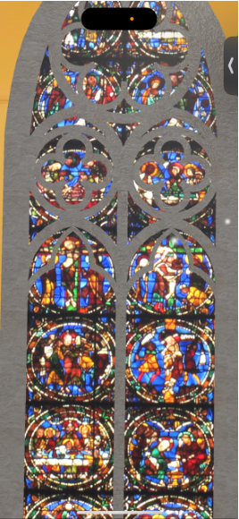
- Issues: Flat window frames without three-dimensionality; overall size too small to accurately cover the real-world window area.
- Reflection: Feasible as a proof of concept, but requiring further modeling optimization.
Stage 2: Fragmentation Texture Testing
- Image Description: Replaced materials with cracked glass textures, visually depicting shattered (but not detached) glass while retaining the frame.
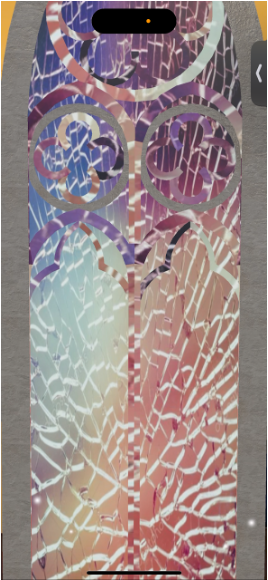
- Implementation: Achieved visual fragmentation by changing transparent texture maps.
- Significance: Served as a visual transition test between “before and after fragmentation,” initially meeting expectations.
Stage 3: Structural Upgrade and Size Adjustment
- Image Description:
◦The improved window features obvious thickness and frame structure, closer to real Gothic window shapes.
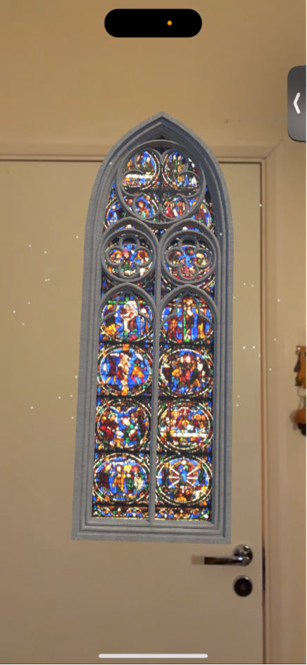
◦After adjusting the aspect ratio, the size matches the West Window’s actual dimensions in the cathedral.
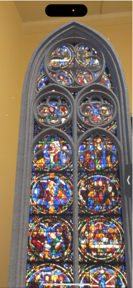
- Improvements:
◦ Increased edge structure thickness.
◦ Enhanced material reflection and texture clarity.
◦ Fine-tuned window size for on-site space adaptation.
Stage 4: Final Model Calibration + Visual Overlay
- Image Description: After optimizing model size and visual angles, the AR window fully covers the actual West Window, ensuring accurate projection.
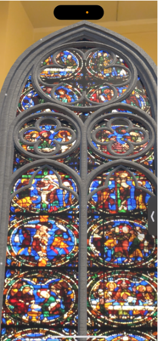
- Visual Effect: Clear painted details and complete frames enhance the sense of reality.
⸻ 💣 Stage 5: Fragmentation Animation Implementation (Figure 5)
- Image Description: Window shards fly outward, creating an explosive visual impact.
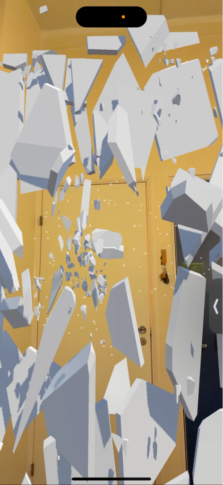
Technical Implementation:
- Simulated shard flight animation (without physical rigid bodies).
- Emotional Effect: The symbolic shattering moment expresses the disintegration of architectural memory, enhancing user emotional immersion.
Detailed Production Module: Jane Austen Digital Portrait AR Interaction
This module aims to present Jane Austen’s virtual image through AR, combining voice narration and quote interaction. It enables audiences to not only see her memorial but also hear her voice, establishing a more emotionally warm connection between literature and history.
Design Concept
- Shape Jane Austen as a Digital Presence;
- The AR module triggers when audiences approach the memorial on-site;
- Simulate character dialogue to play content, enhancing participation and immersion.
Production Stages and Image Descriptions
Stage 1: Conceptual Scene Design
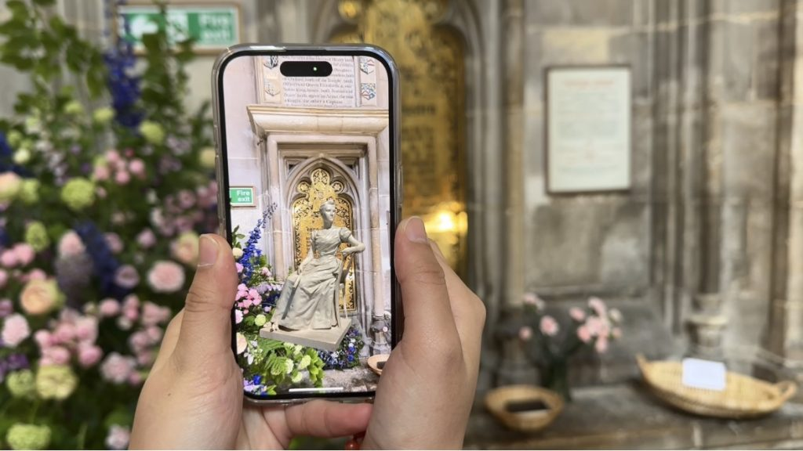
- Image Description: Static photo manipulation simulates AR effect—Jane Austen’s portrait overlays the real memorial background on the phone screen.
- Objective: Clarify final visual goals and spatial integration methods.
- Reflection: Static composition helps pre-consider proportions, poses, and lighting fusion in advance.
Stage 2: Implementation of Voice Quote Interaction
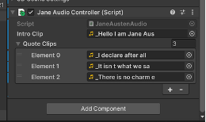
- Interaction Logic:
◦ Quote buttons appear on the screen for tapping.
◦ Each tap triggers Jane Austen to recite a selected quote.
◦ Quotes do not repeat, ensuring users hear new content each time.
◦ Example quote: “There is no charm equal to tenderness of heart.”
- Script Function: Uses a logic list to play quotes in order or randomly, removing each quote from the pool after playback.
Stage 3: Sound Processing
- Dubbing Style: Adopts a gentle female tone with British pronunciation, aligning with the aesthetic of 19th-century British literature and the character’s temperament.
- Sound Rhythm: Steady and unhurried intonation helps create a calm, elegant immersive atmosphere.
- Technical Implementation: Generates AI dubbing via TTSMaker website, featuring natural intonation and high speech recognition.
- Post-processing: Performs simple editing on the generated audio to ensure it matches interaction rhythms, preventing user waiting or accidental touches.
Technical Testing Status
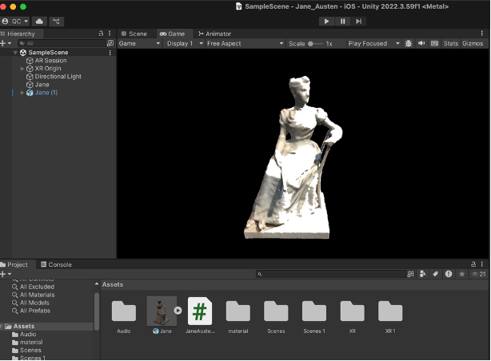
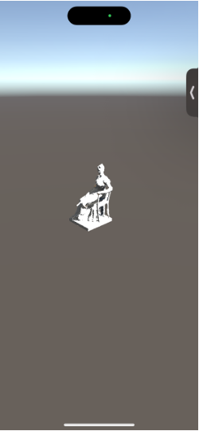
- Issue: During iOS device testing, the camera failed to activate (speculated to be due to permission settings or ARKit initialization problems).
- Status: Although real-time AR display wasn’t completed, all voice logic and interactive functions were successfully implemented in Unity.
Attempting Gothic Window Tracery Modeling in Blender
Before turning to downloadable 3D models, I tried modeling Gothic stained glass window frames in Blender, referencing a tutorial video on traceries (window ornament structure) modeling. The goal was to deeply understand the structural complexity of medieval stained glass and assess the feasibility of creating custom models for this project.
Following the tutorial, I used Bezier curves to draw typical Gothic pointed arches and rose window patterns, attempting to add thickness and three-dimensional structure with Curve Modifiers combined with custom cross-sectional objects.
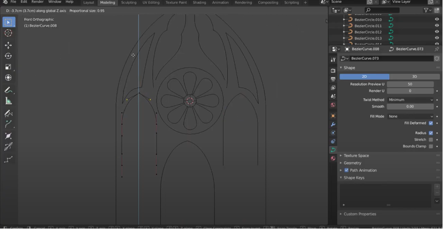
Due to time constraints and the challenge of fully drawing and extruding all structures, I paused this part in the middle stage (as shown in the image). Although the model wasn’t completed, this process enhanced my understanding of the relationship between structure and patterns in historical traceries, prompting me to prioritize geometric accuracy and artistic authenticity in subsequent material selection.
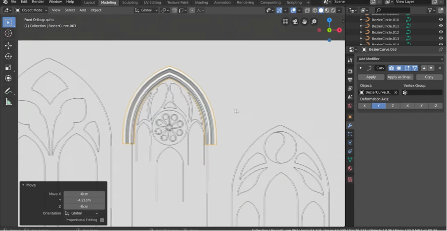
3D Assets and Sources
All the core 3D models used in this AR prototype were sourced from Sketchfab, a platform offering downloadable, royalty-free assets suitable for prototyping and educational projects. This approach allowed for rapid iteration and focused experimentation without the need for time-consuming modeling from scratch.
- Jane Austen Sculpture: Model: 18th Century Lady Sculpture Sketchfab Link This classical sculpture was chosen to represent Jane Austen’s digital presence in the AR experience. Its elegant posture and period-appropriate attire align with the literary and historical atmosphere of the installation.
- Gothic Window with Painted Glass: Model: Gothic Window with Painted Glass Sketchfab Link Used as the initial intact version of the West Window in the cathedral scene, this model provides the necessary stained glass texture and architectural framing for the dramatic shattering effect.
- Broken Glass: Model: Shatter Glass Sketchfab Link This model represents the fractured state of the stained glass after the simulated breaking moment. It was used to convey a sense of fragility, memory, and loss, contributing to the emotional tone of the experience.
By using these models, the project was able to quickly test and visualize key interactive ideas while maintaining a balance between realism and efficiency.
Using Procreate for Interactive Prototype Development
To quickly visualize and test key interactive elements in my AR project, I created simple animated prototypes with Procreate. This low-tech yet intuitive approach helped me preview and optimize interaction logic before transitioning to formal development in Unity.
Sound Sculpture
To guide users to interact with the Sound Sculpture in the basement, I designed a subtle yet noticeable click prompt animation in Procreate.
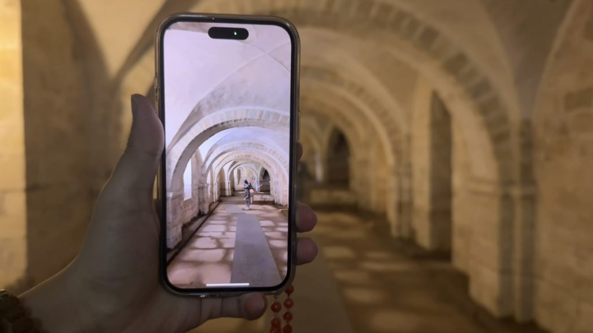
- A red pulsing circle appears at the sculpture’s chest
- The animation loops gently to convey click here without disrupting the solemn basement atmosphere.
- This prototype primarily simulates the click-triggered logic and response that will be implemented in Unity.
Interaction Expectation:
Clicking triggers deep choral singing, creating a multi-sensory immersive experience.
Navigation Guidance Arrows
For the AR navigation system, I drew arrow and endpoint prompt animations in Procreate for path guidance.
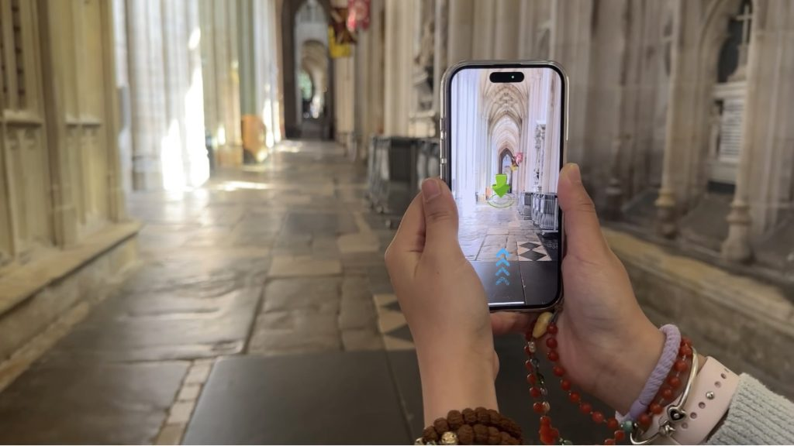
- A set of blue dynamic arrows flash sequentially along the ground, simulating the direction to guide users’ walking path.
- When reaching the target area (e.g., Jane Austen’s memorial or the West Window), a green pulsing arrow appears to prompt “You have arrived.”
- These animations were composited into real-site photos to preview the visual effects in future AR implementation.
Follow-up Development Plan:
These guidance effects will integrate with Vuforia Area Targets technology, anchoring in the cathedral’s actual space to achieve precise and persistent AR tour paths.
App Icon Design Explanation
The Winchester Cathedral AR app icon fuses historical elegance with modern digital aesthetics, establishing a calm and profound visual tone for the entire project.
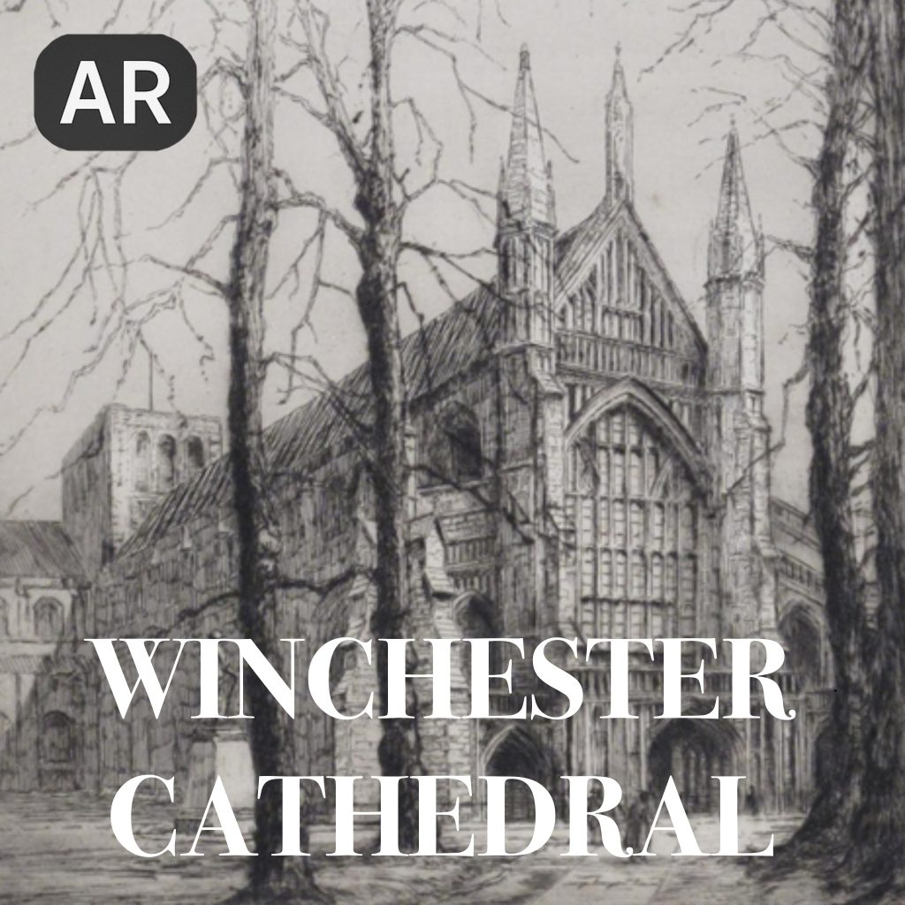
- Visual Foundation:
The background features an etching-style architectural illustration of Winchester Cathedral sourced from MutualArt. This hand-drawn image exudes historical ambiance, reflecting the project’s focus on digital preservation of cultural heritage. - Typography Design:
The “WINCHESTER CATHEDRAL” text at the icon’s center uses a high-contrast serif font with loose letter spacing, emulating the elegant aesthetic of cathedral stone inscriptions or 19th-century antique book covers. The typeface balances authority with literary charm. - AR Logo:
The “AR” symbol in the upper-left corner was hand-drawn in Procreate, maintaining system icon recognizability while retaining subtle brush strokes reinforcing the project’s concept of integrating technology with artisanal touch. - Overall Atmosphere:
The black-and-white monochrome palette evokes a sense of historical weight, resembling a sketchbook drawing. The contrast between the silhouette of a withered tree and Gothic tracery details metaphorizes the overlay of past and present a visual analogy for the AR narrative in this project.
This icon not only ensures clear visual recognition at small sizes but also serves as a condensed symbol, conveying the project’s core concepts of memory, space, and enhanced storytelling.
List of Tools Used
| Tool | Purpose |
|---|---|
| Unity | Main development platform (AR Foundation + ARKit) |
| Procreate | Hand-drawn animations and visual effects |
| Blender | 3D modeling of window frame and sculpture |
| Audacity | Sound editing and layering |
| iPhone + ARKit | Device testing and screen capture |
| Vuforia (Planned) | Area Targets and spatial mapping |